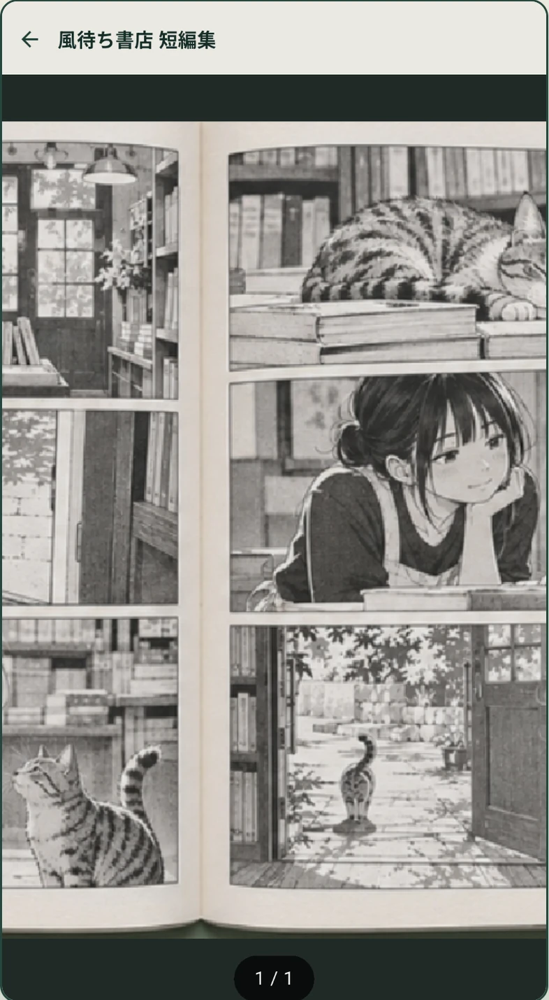
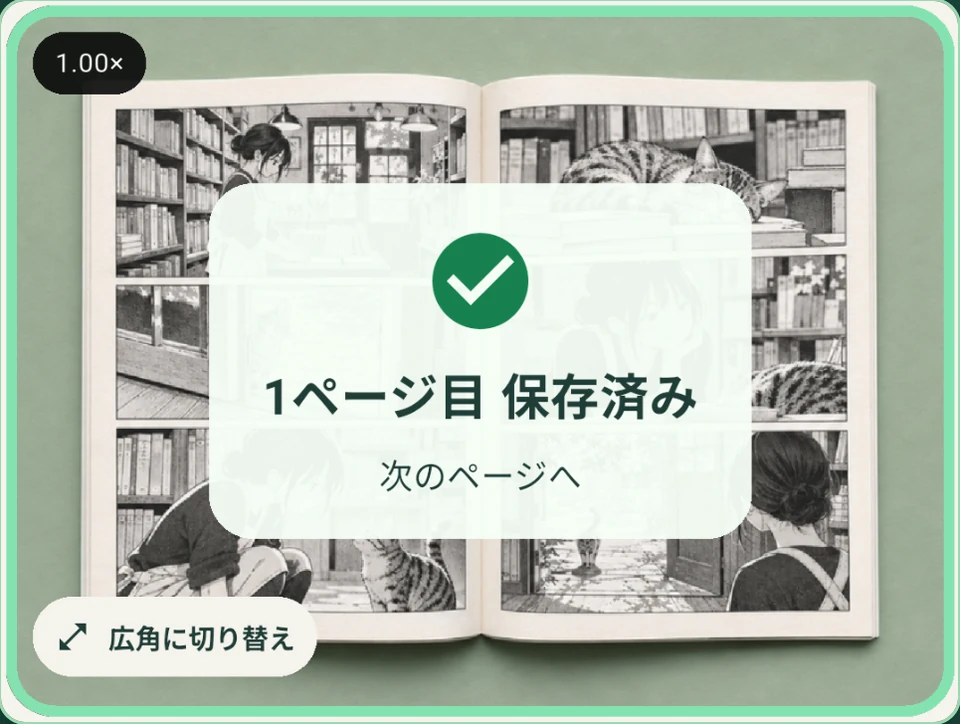
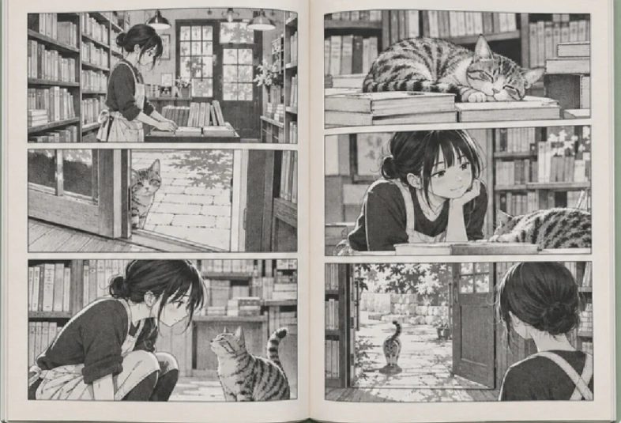
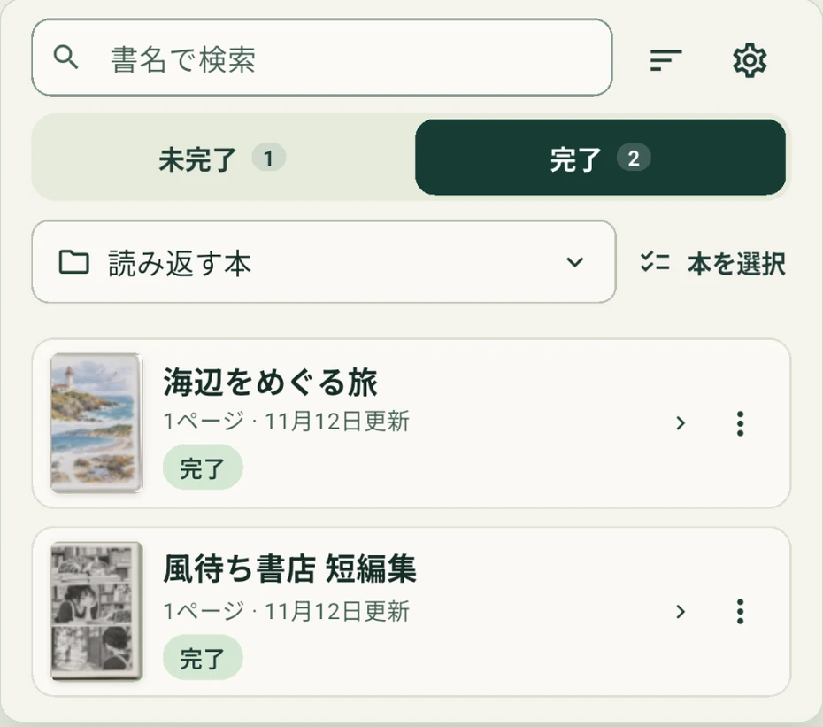

本・漫画スキャナー
紙の本を、めくって残す。
本にカメラを向けて、ページをめくる。
メクリトルが次のページを自動で撮影。
取り込んだ本は、スマホでそのまま読めます。

Android対応 · 無料


ページをめくると、自動で撮影。
-
本を画面に収める
本の四隅が入るようにカメラを向けて、自動撮影を開始。
-

ページをめくる
保存のチェックが出たら、次のページへ。
-

自動で撮影・保存
ページが落ち着くと自動で撮影。保存はチェックで確認できます。
撮ったあとに、まとめて整える。
紙面の周囲を切り取り、ページ外の背景を白くしたり、文字や線を濃くしたり。選んだ補正を複数ページにまとめて適用できます。



撮りためた本を、
好きなときに読み返す。
- スマホでそのまま読む左右のスワイプでページ送り。小さな文字はピンチで拡大でき、右開き・左開きも選べます。
- 本は書名検索とフォルダで探す撮影途中の本は未完了に。撮影を終えた本はフォルダに整理できます。
- PDF・CBZで書き出す 1冊をファイルにまとめて、普段使っている対応ビューアでも読めます。
よくある質問
本を裁断する必要はありますか？
本を開いて、スマホのカメラで撮影するだけです。左右のページをまとめて1枚として保存できます。
撮影した画像はどこに保存されますか？
撮影した画像は端末内に保存し、加工も端末内で行います。別の端末で読む場合は、PDFやCBZに書き出して移せます。
どんな本を撮影できますか？
本、漫画、雑誌などの紙面を撮影できます。
メクリトル
本・漫画スキャナー